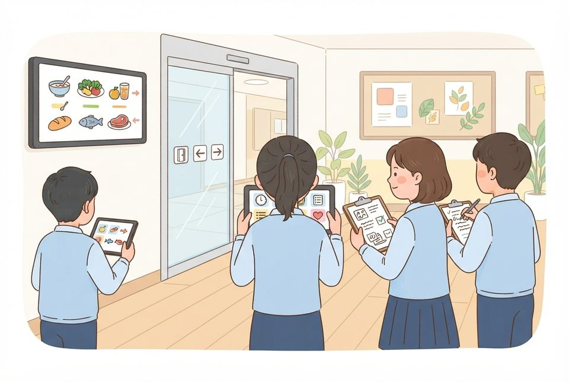
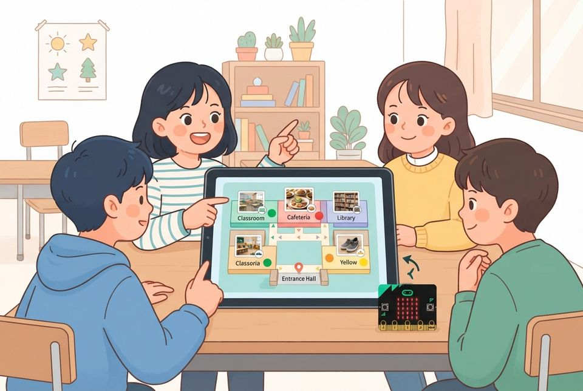

우리 학교를 탐험하며 소프트웨어가 든 물건을 찾아 SW 지도 만들기
학습 문제 — 우리 학교 곳곳에서 소프트웨어가 들어 있는 물건을 찾아 숨은 명령을 추측하고, 우리 학교 SW 지도로 만들어 발표해 봅시다.
개요
| 성취기준 | [5실SW01-01] 생활 속에서 소프트웨어가 활용되는 사례를 찾아보고, 해결할 수 있는 문제를 발견한다. 연계 성취기준: [6실05-01], [06자율-1] |
|---|---|
| 핵심 역량 | 지식정보처리 역량, 협력적 소통 역량 |
| 핵심 기능 | ① 생활 속에서 활용되는 컴퓨터의 사례 탐색하기 ② 소프트웨어와 하드웨어를 나누어 가리키기 ③ 학교 현장에서 SW가 든 물건을 찾아 사진과 메모로 기록하기 ④ 숨은 명령을 추측하고 근거를 들어 판정하기 ⑤ Canva로 우리 학교 SW 지도를 만들어 발표하기 |
| 가치 태도 | 생활 속에서 컴퓨터를 활용해 해결 가능한 문제를 탐색해 보려는 자세 판단이 갈리는 물건은 무엇을 더 확인하면 되는지 찾아보려는 자세 |
교수학습 활동
1차시 도입 동기 유발 · 학습문제 제시1차시 전개 활동1. 하드웨어·소프트웨어 나누기 놀이 · 활동2. 우리 학교 SW 탐험하기2차시 전개 활동3. Canva로 우리 학교 SW 지도 만들기 · 활동4. SW 지도 발표와 판정 토론2차시 정리 배운 내용 정리 · 다음 차시 예고
1차시도입7분
동기 유발
- 해결단 1호 미션: 우리 학교 SW 지도 만들기 안내 듣기
- 학교에 와서 정해진 대로 움직인 물건 떠올려 말하기
- 교사 마이크로비트 A 버튼 시연: 명령만 바꾸자 하트가 숫자 3으로 바뀌는 모습 보기
- 소프트웨어는 사람이 미리 정해 준 명령의 묶음임을 적기

학습문제 제시
- 우리 학교 곳곳에서 소프트웨어가 들어 있는 물건을 찾아 숨은 명령을 추측하고, 우리 학교 SW 지도로 만들어 발표해 봅시다.
자료SW 탐험 기록지, 해결단 1호 미션 카드, [도입] 상황 그림
자료교사 시연용 마이크로비트 1대(하트 → 숫자 3 명령)
유의점몸체는 그대로이고 명령만 바뀌었다는 점을 짚는다.
유의점미션 카드는 32차시 전시회까지 게시판에 붙여 둔다.
1차시전개33분
활동1. 하드웨어·소프트웨어 나누기 놀이 (12분)
- 교사 마이크로비트를 돌려 보며 LED·버튼·칩 짚어 보기
- 만질 수 있는 몸체와 부품은 하드웨어임을 적기
- 하트가 3으로 바뀐 까닭이 명령(소프트웨어)임을 적기
- 짝과 물건 카드를 하드웨어 칸·소프트웨어 칸에 나눠 놓기
- 한 물건 속 두 가지 찾기: 계산기 몸체·버튼 / 곱셈 명령
- 탐험 역할(사진·기록·길잡이·안전)과 약속 확인하기
활동2. 우리 학교 SW 탐험하기 (21분)
- 모둠 구역(교실·복도·급식실·도서관·현관·보건실 앞) 둘러보기
- SW가 들어 있을 것 같은 물건을 사람이 나오지 않게 찍기
- 현장 메모: 하드웨어 한 가지와 ‘언제 → 무엇을 한다’ 명령 쓰기
- ‘있다·없다·더 알아봐야 함’ 가운데 하나로 판정하고 근거 한 줄 쓰기
- 판정이 갈리는 물건은 확인할 방법 적기(예: 행정실 선생님께 여쭙기)
- 기본: 물건 네 개 / 도전: SW 없는 물건 하나와 짝지어 찍기

준비물모둠 태블릿, 클립보드, 필기구, 판정 스티커 3색, 교사 시연용 마이크로비트
자료SW 탐험 기록지, 탐험 구역 배정표, 물건 카드(연필·계산기·교실 시계·자동문·신호등·마이크로비트)
유의점하드웨어와 소프트웨어는 한 물건 안에 함께 있음을 짚고, 물건 전체를 한쪽으로만 나누지 않게 한다.
유의점동선은 관련 부서와 미리 협의하고, 교사는 구역을 돌며 안전과 복귀 시각을 확인한다.
유의점사람 얼굴과 개인정보는 찍지 않고, 기기는 조작하지 않는다.
유의점자동으로 움직인다는 까닭만으로 SW가 있다고 판정하지 않게 한다.
유의점판정이 갈리는 물건은 결론을 알려 주지 말고 확인할 방법을 적게 한다.
유의점느린 학습자는 ‘언제 → 무엇을 한다’ 빈칸 카드를 쓰게 한다.
2차시전개33분
활동3. Canva로 우리 학교 SW 지도 만들기 (20분)
- 교사가 보낸 Canva 수업 링크로 모둠 지도 디자인 열기
- 학교 평면도의 장소마다 찍은 사진을 올리고 핀 꽂기
- 핀 말풍선에 하드웨어·숨은 명령(소프트웨어)·판정 색 붙이기
- 모둠원이 각자 맡은 핀에 근거 한 문장 쓰고 이니셜 달기
- 핀 하나를 골라 명령 한 줄을 바꾸면 달라질 일 적기
- 도전: 판정이 갈린 물건을 노랑 구역에 모으고 확인 방법 달기

활동4. SW 지도 발표와 판정 토론 (13분)
- 모둠 지도를 화면에 띄우고 모둠원이 핀 하나씩 맡아 발표하기
- 듣는 모둠은 O·X·? 판을 들어 판정에 동의하는지 나타내기
- 판정이 갈린 핀은 근거를 듣고 확인할 방법 함께 정하기
- 다른 모둠 지도에 더 확인할 점을 댓글이나 붙임쪽지로 1개 남기기
준비물모둠 태블릿, O·X·? 판정 판, 붙임쪽지
자료Canva 교육용 수업 링크, 학교 평면도 템플릿
유의점가입·사용 연령은 학교 계정 정책을 따르고, 지도에는 실명·얼굴 사진 없이 이니셜만 쓴다.
유의점인터넷이 안 되면 전지 평면도와 인쇄한 사진으로 만든다.
유의점AI 생성 기능은 쓰지 않고, 썼다면 AI 도움 표시를 붙인다.
유의점판정 근거는 각자 쓰게 하고, 모둠 결과로 개인 성취를 판단하지 않는다.
2차시정리7분
배운 내용 정리 (5분)
- 오늘 찾은 물건 하나를 하드웨어와 소프트웨어로 나누어 쓰기
- ‘자동으로 움직이면 모두 소프트웨어일까?’에 까닭을 들어 답하기
- 오늘 판정을 바꾼 물건과 바꾼 근거 적기
다음 차시 예고 (2분)
- 해결단 2호 미션: 지도 속 장소에서 학교 사람의 불편 찾기
- 기록지를 내고 SW 지도는 출력해 교실에 붙이기
자료SW 탐험 기록지, 출력한 모둠 SW 지도
유의점쓰기를 어려워하는 학생은 말로 확인하고 지원한 사실을 기록한다.
유의점결석이나 미제출로 확인하지 못한 학생은 따로 적어 두고 보충 확인 시점을 정한다.
평가 계획
컴퓨팅 사고력 · 소프트웨어 개념 이해와 사례 판단
학교 현장에서 찾은 물건의 숨은 명령을 추측해 쓰고, 소프트웨어가 들어 있는지 근거를 들어 판정해 SW 지도로 발표할 수 있는가?
| 수준 | 평가 기준 |
|---|---|
| 매우 잘함 | 소프트웨어와 하드웨어를 자기 문장으로 구분하고, 탐험 기록지의 물건마다 숨은 명령을 ‘언제 → 무엇을 한다’로 적으며 근거를 들어 판정한다. 판단이 갈리는 물건은 확인할 방법을 밝히고, SW 지도의 자기 핀에서 명령 한 줄을 바꾸면 달라질 일까지 설명한다. |
| 잘함 | 소프트웨어를 사람이 미리 정해 준 명령의 묶음으로 설명하고, 찾은 물건에서 숨은 명령을 추측해 쓰며 판정의 까닭을 한 가지 들어 발표한다. |
| 보통 | 물건은 찾아 기록하나 명령 문장이 물건 이름 나열에 가깝거나, 판정의 까닭이 자동으로 움직인다는 데 머문다. |
| 노력요함 | 교사가 정의를 함께 읽고 도움 카드로 물건을 짚어 준 뒤에도 숨은 명령을 추측해 쓰거나 소프트웨어와 하드웨어를 구분하는 데 어려움이 있다. |
| 미관찰 | 결석이나 미제출로 확인하지 못한 경우. 낮은 성취로 적지 않고 따로 기록한 뒤 보충 확인 시점을 정한다. |
평가 방법 탐험 기록지 분석 · SW 지도(개인 핀) 분석 · 구술 확인 · 관찰
연동 도구·링크
과정안에 나오는 도구가 저절로 걸립니다. 수업 전에 학교망에서 열리는지, 블록·메뉴 이름이 바뀌지 않았는지 확인하세요.
마이크로비트 V2 ↗LED·버튼·가속도·소리 센서, 무선 통신계정: 필요 없음Canva ↗SW 지도, 공감 지도(화이트보드), 미션 포스터, 팀 소개판계정: 교사가 만든 수업(클래스) 안에서 사용
내 수업 링크
학급 패들렛, 엔트리 작품, 활동지 주소처럼 이 차시에 쓸 링크를 걸어 둡니다. 이 브라우저에만 저장되고 밖으로 보내지 않습니다. 학생 이름이 든 주소는 넣지 마세요.